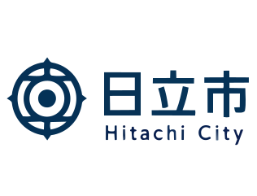
世界を支えるものづくりの街であり、
海の絶景と豊かな自然に囲まれた都市。
技術・自然・文化・暮らしやすさが調和した、
未来へ挑戦し続ける街。
日立市は、日本を代表する総合電機メーカー「日立製作所」発祥の地です。1906年に日立鉱山の機械修理工場として始まった技術の挑戦は、やがて世界的企業へと成長しました。現在も多くの製造業や研究開発拠点が集まり、日本の産業を支える重要な都市として発展を続けています。
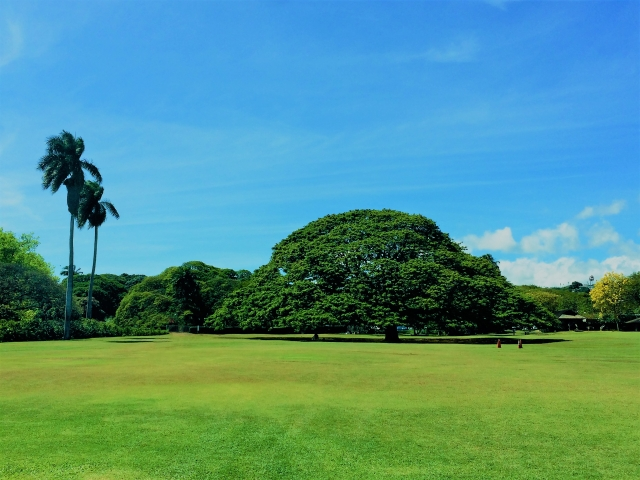
日立の樹（日立グループのシンボルツリー）
海と山に恵まれた日立市には、海の幸から果樹・野菜、ご当地グルメまで、豊かな食の名物があります。
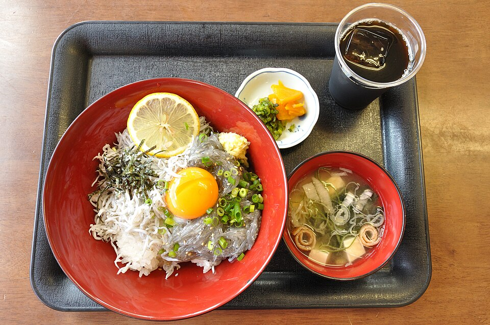
久慈川河口の久慈浜で水揚げされる新鮮なしらす。短時間で網を上げる「一艘引き」漁により、鮮度を保った味わいが楽しめます。
しらす丼（イメージ）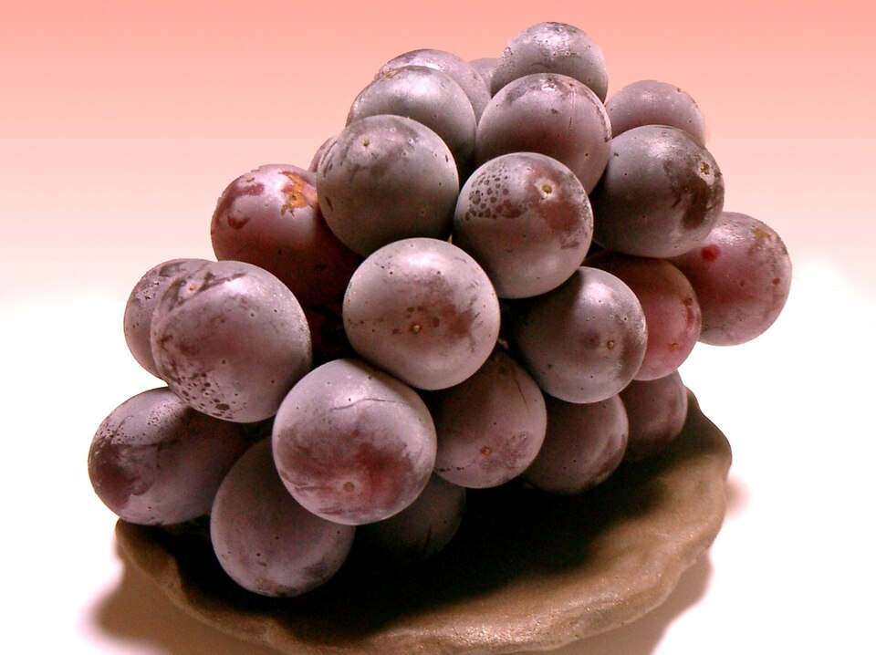
海風と昼夜の寒暖差が育てる甘いぶどう。「日立中里フルーツ街道」でも親しまれ、地域ブランドにも認定された果樹です。
巨峰（イメージ）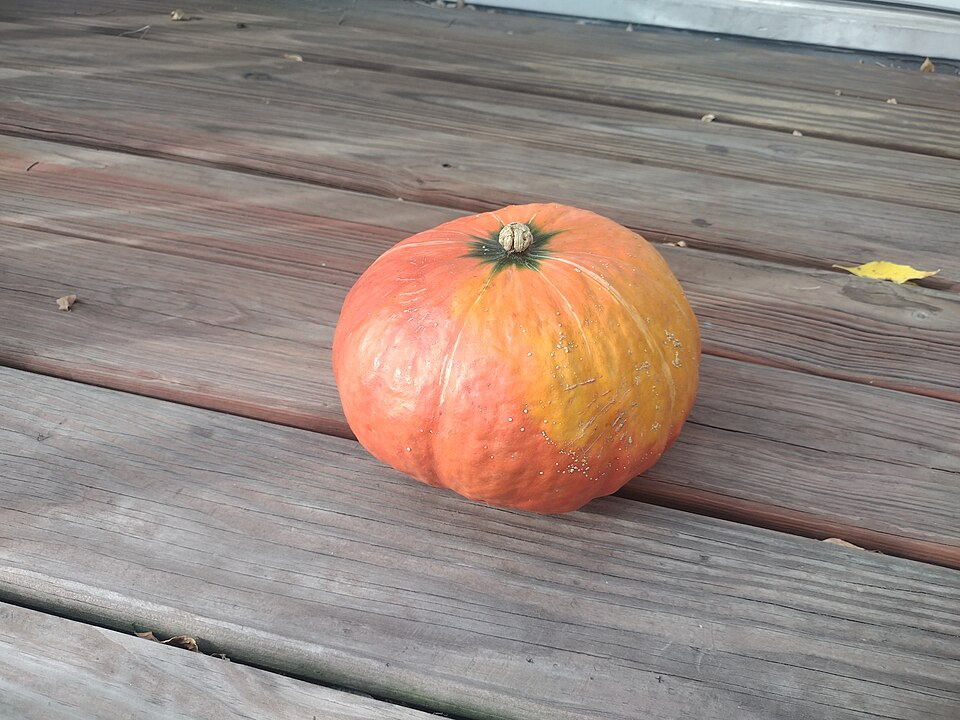
久慈・茂宮川流域の良質な土壌で育つ、ほくほくとした甘いかぼちゃ。茂宮はくさいとともに市を代表する特産品です。
かぼちゃ（イメージ）甘辛のあんに素揚げ野菜とレバーをのせた茨城のご当地ラーメン。市内の名店でも親しまれるボリューム満点の一杯です。
スタミナラーメン（イメージ）日立駅は、日本でも珍しい海を一望できる駅です。全面ガラス張りの美しい駅舎からは太平洋の大パノラマが広がり、まるで海の上に浮かんでいるかのような景色を楽しむことができます。世界的建築家・妹島和世氏がデザイン監修を行い、国内外から高い評価を受けています。
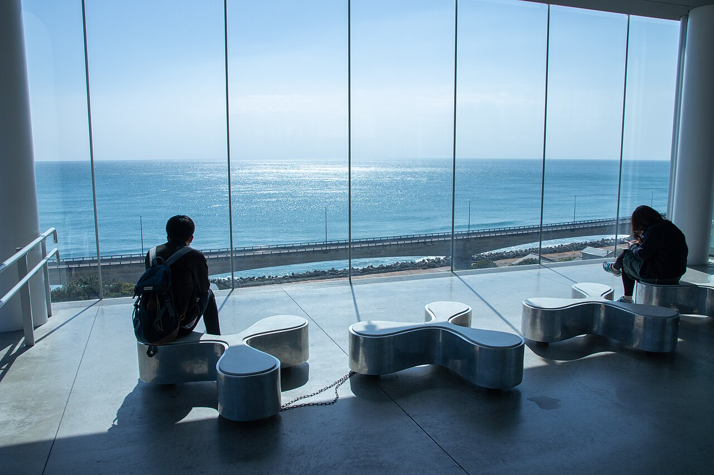
日立駅・海を望むガラス張りの駅舎
東には雄大な太平洋、西には緑豊かな山々。日立市は都市機能を持ちながらも、豊かな自然を身近に感じられる恵まれた環境があります。海岸沿いのドライブやハイキング、四季折々の風景など、日常の中で自然を楽しむことができます。
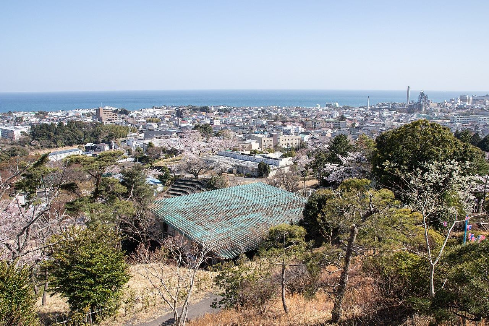
かみね公園から望む海と山並み
日立市は桜の名所としても知られています。平和通りやかみね公園を中心に、春になると市内各所で美しい桜が咲き誇ります。かつて鉱山開発によって失われた自然を取り戻そうと、市民と企業が力を合わせて植樹を続けた歴史があります。
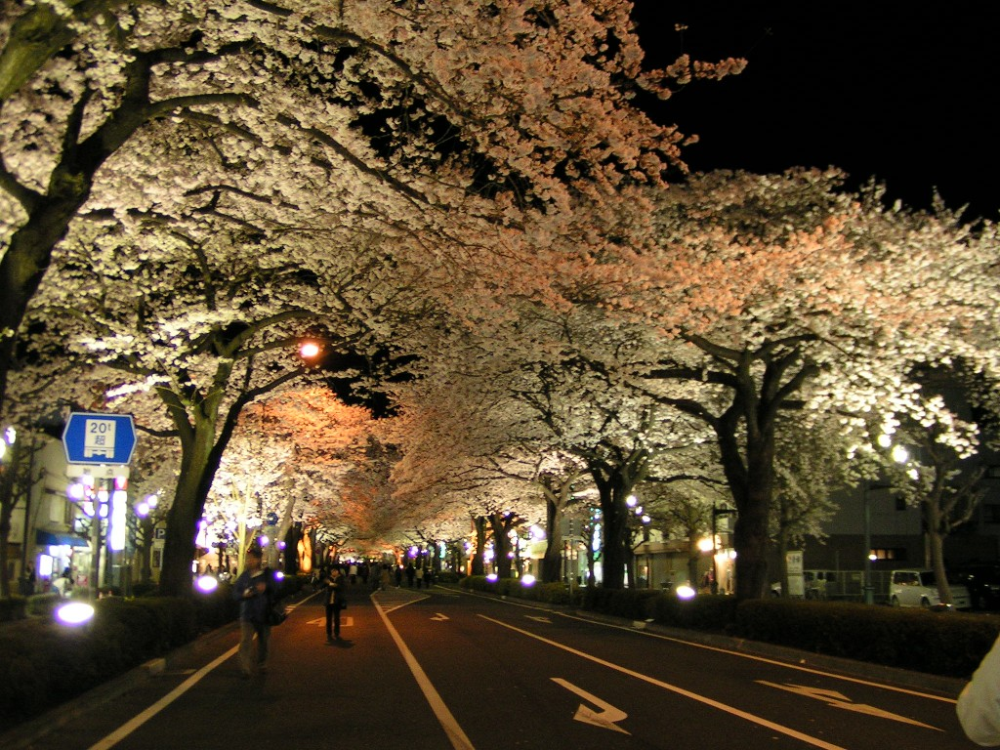
平和通りの桜並木（夜のライトアップ）
山から海へと広がる独特の地形が、美しい夜景を生み出しています。特にかみね公園周辺から望む夜景は、日本夜景遺産にも認定され、多くの人を魅了しています。街の灯りと太平洋の夜景が織りなす風景は、日立市ならではの魅力です。
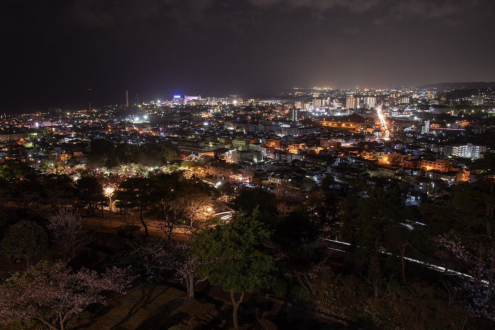
かみね公園から望む日立市の夜景
日立市には、世界的建築家・妹島和世氏の感性が息づいています。象徴的な日立駅をはじめ、洗練された景観やデザイン性の高い空間が街の魅力を高めています。技術だけでなく、美しさも大切にする都市文化が根付いています。
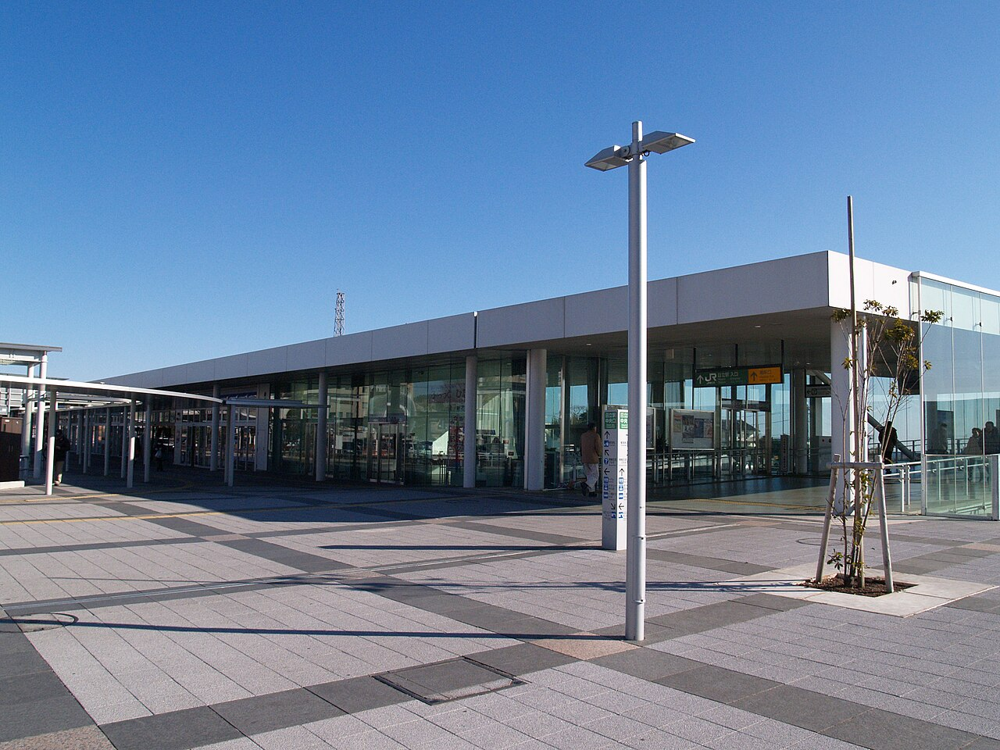
日立駅 中央口の現代的な駅舎
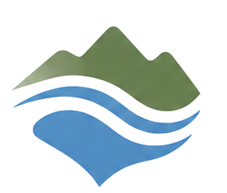
ABOUT CITY日立市について →